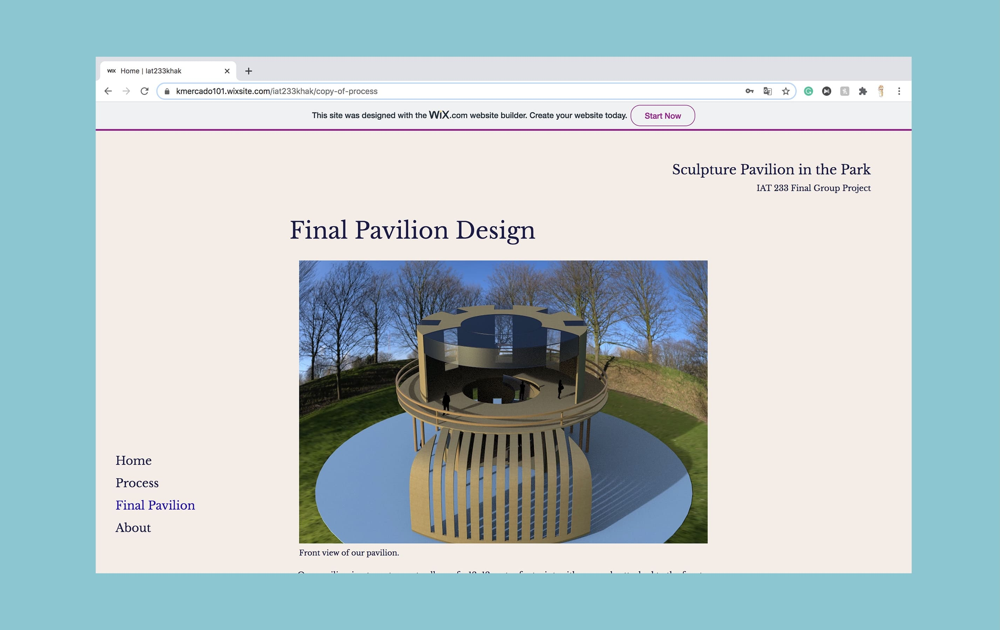
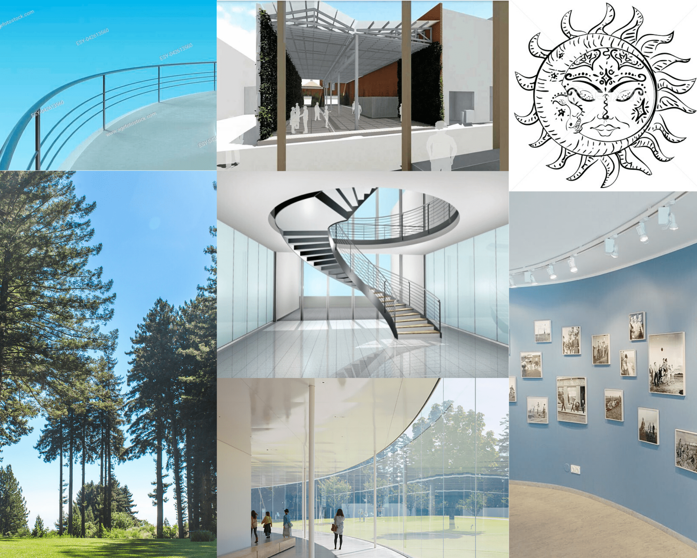

Mood Board

/2020/
In SIAT's Spatial Design course, which is a challenging class that incorporates high expectations on applying critical thinking to understand and design spaces used by people, my team had to design a Sculpture Pavilion in Holland Park for visitors to watch the artwork and rest.

As a member of a team of four, I was in charge of the planning, graphic design, and leadership within my group. Choosing a well-designed space to build our Pavilion was a challenge we need to overcome. The first step I took was leading other team members to Holland Park to find some inspiration and considered the best construction location from the user's point of view. Then a particular spot surrounded by trees and plants in the park drew my attention. I googled a satellite view of Holland Park and began sketching out where the Pavilion was by using Photoshop. Afterward, I searched for inspiration for the style of the Pavilion online. I collected a lot of images that evoked the clean and peaceful feelings I wanted my visitors to experience and then created a mood board to help my teammates understand my inspiration for designing the Pavilion.I continued drawing more sketches on Procreate to reiterate the style of the Pavilion. The trees and plants created a healing and peaceful atmosphere for visitors. In this sense, I decided to create an open circular terrace to let the visitors appreciate art in an environment surrounded by nature and then easily get immersed in nature and the art displays. I made multiple adjustments until I was satisfied, then my teammates implemented my design and made our final version of the project. Finally, our hard work resulted in an A+ for the final project and an overall grade of A for the course.

View the original site / password: iat233group8